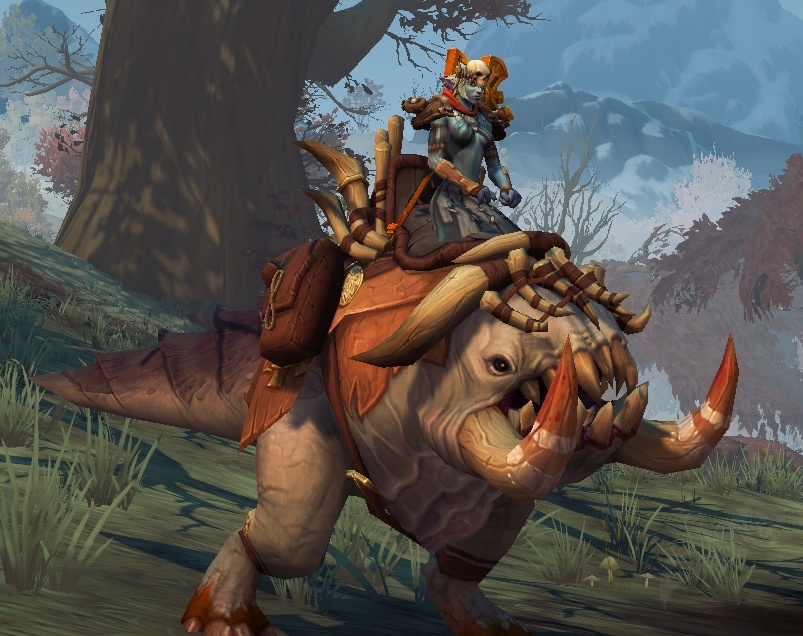
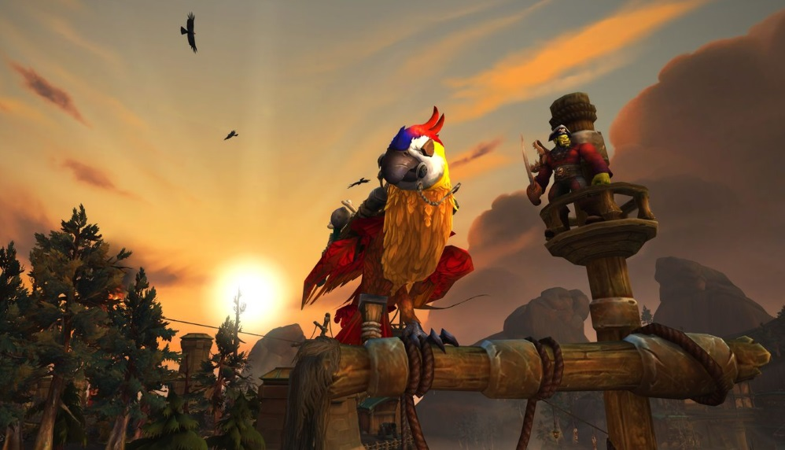
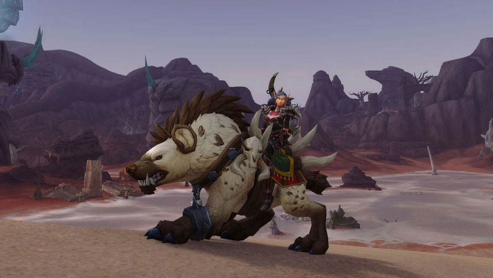

Les modeles de monture de l'extension Battle for Azeroth
Les collectionneurs de montures étaient ravis grâce à l'extension Légion, et ils le furent encore plus avec l'arrivée de Battle for Azeroth ! Cette dernière apporte de nombreux modèles exclusifs, dont beaucoup qui étaient réclamés par la communautés. Nous vous laissons tous les découvrir en lisant cet article !
Les montures de donjon
Le crogg des trefonds putrides
Les croggs sont des animaux apparus à Battle for Azeroth qui peuplent Zandalar, et plus particulièrement la zone de Nazmir. Ces derniers, peu charismatiques puisqu'ils ressemblent à de vulgaires chipolatas sur pattes, possèdent un modèle unique et assez original ce qui les rend très convoités.
Le premier crogg sorti s'obtient sur le dernier boss des Tréfonds Putrides, donjon de la zone Nazmir en mode mythique. Assez rare puisque son taux d'obtention est autour des 1% et que les donjons mythiques sont limités à 1 par semaine ...

Le crogg des tréfonds putrides
Cependant, avec la sortie des mythiques +, la monture peut également être obtenue dans le coffre à la fin de chaque mythique + qui eux, n'ont pas de restriction hebdomadaire.
Le raptor mommifie
De la même façon que la monture Crogg, le raptor mommifié est le seul de ce genre dans le jeu. Son mode d'obtention est également similaire mais ce raptor est bien plus compliqué à obtenir... Vous pouvez toujours faire le donjon mythiques chaque semaine et prier pour l'avoir au taux de 1% , mais il est très compliqué de faire ce donjon en mythique + de par sa difficulté : le premier boss est littéralement un "mur", il vous faudra un équipement minimum assez élevé afin d'en venir à bout.
L'entrée du donjon Repos des rois
Jacasse le Perroquet
Le donjon Port-liberté vous permet d'obtenir une des plus belles montures du jeu, un perroquet rouge, et de façon assez simple. En effet, le mode d'obtention est similaire aux montures présentées précédemment mais le donjon en mythique + est assez simple ce qui permet d'en enchainer plusieurs assez rapidement !

La monture perroquet
Les montures World-loot
L'extension introduit 4 nouvelles montures avec un mode d'obtention particulièrement frustrant : les World-loot. Le principe : la monture est disponibles dans la table de butin des monstres d'une certaine race dans toute une zone mais à un taux extrêmement bas.
Nazmir
Une de ces montures est disponible à Nazmir, dans la table de butin des Trolls de sang à un taux de 0.001%. Afin d'avoir un minimum de chance d'obtenir cette monture (vu son taux ridicule), il vous faudra former des groupes avec une stratégie particulière.
Il vous faudra former deux groupes de 4 personnes : le premier possédant un moine tank, trois classes de dégâts au corps à corps et dans le second, 4 classes de dégâts à distance (mage, démoniste, druide)
Il ne vous reste plus qu'a vous rendre dans un endroit nommé "hyperspawn", c'est à dire un endroit découvert par les joueurs réputé pour avoir un taux de monstres qui apparaissent à la seconde très élevé.
La monture world-loot de nazmir L'hyperspawn de Nazmir
Vol'dun
La seconde monture est obtenue dans le désert de Vol'dun. Au même taux que la précédente, celle-ci s'obtient sur les Sethrak, les hommes-serpents. Ces derniers rendent l'obtention de la monture compliquée car ils possèdent deux attaques assez contraignantes. La première, "écailles électrifiées", leur applique un bouclier de 8s qui vous renvoie 60% de vos dégâts et la seconde, "tourbillon", les fait tournoyer et ils vous repoussent sur plusieurs mètres dès qu'ils vous touchent.
La composition du groupe doit être différente afin de s'adapter à ces compétences : il faudra remplacer une classe de dégâts corps à corps par un soigneur afin de maintenir le groupe en vie.

Le charognard des dunes L'hyperspawn de Vol'dun rempli de Sethraks
Les zones de l'Alliance
Il existe deux autres montures world-loot (des chevaux) disponibles dans les zones de l'Alliance : Drustvar et la Vallée chantorage. Nous passerons très rapidement sur ces dernières puisque leurs modes d'obtention sont similaires et qu'il n'existe aucune difficulté.
Vous aurez donc tout intérêt à remplacer une classe de dégâts corps à corps par une à distance, ce qui vous permettra de tuer plus de monstres à la seconde.
Les gouffres à po
A chaque extension, Blizzard introduit une monture particulièrement chère, afin de vider le stock d'or des joueurs les plus riches et de dynamiser le marché. Cette extension en apporte deux, une navrecorne blanc pour 500 000po, et un immense brutosaure pour 5 000 000 po (Non, il n'y a pas de 0 en trop).
Ces derniers s'achètent à Dazzar'alor et Boralus, capitales des deux factions à Battle for Azeroth. Le brutosaure peut cependant être très utile puisqu'il possède sur son dos un commissaire priseur vous donnant l'accès à l'hôtel des ventes ainsi qu'un vendeur !
Le brutosaure, plus grande monture du jeu (et plus chère)